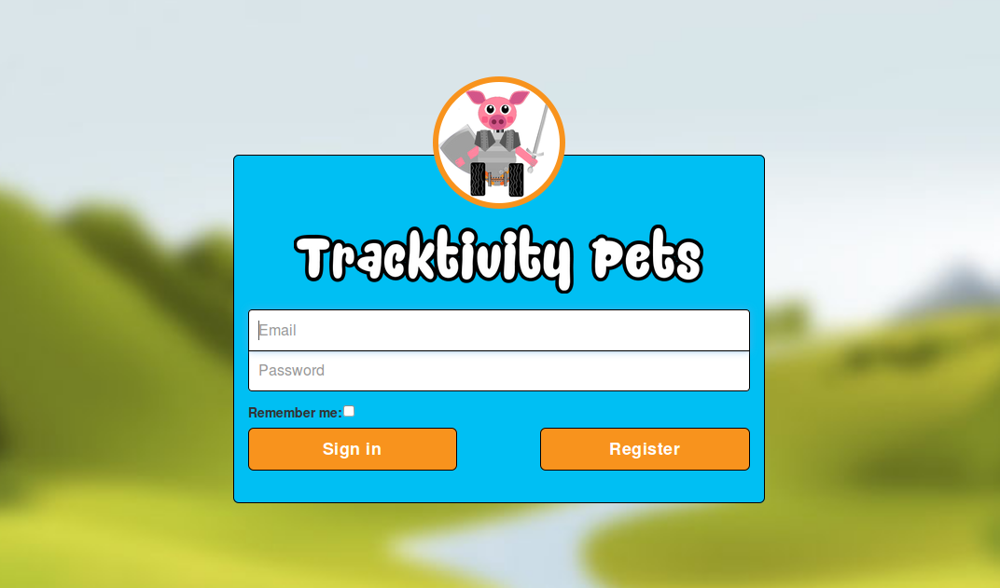

Tracktivity Pets File Overview¶
Front-end files¶
User Interface¶
The user interface of Tracktivity Pets incorporates Django templates, CSS, Javascript and JQuery. To achieve its responsive layout, it makes heavy use of the Bootstrap framework. This is a public and freely available CSS file which allows for much simpler responsive web design by using a wide variety of CSS classes within a site’s HTML structure. Tracktivity Pets also applies its own style.css stylesheet, in which many site-specific style rules are defined. This can be found in the /static/tracktivityPetsWebsite/style/ folder.
As the style.css file is quite large and contains a huge number of style definitions, to locate a particular definition more easily, it is recommended that when you want to modify a particular element (like an image’s border thickness, or a certain margin value) that you perform a CTRL+F search for the image’s ID or class.
Site templates¶
Templates Introduction¶
Each separate page within Tracktivity Pets is either defined in a Django template file of its own (such as the Feedback page), or a collection of sub-templates which are then included into a main template (such as the Store). Django templates are essentially just HTML files which incorporate extra code for processing data returned from a Django view file, such as what pets a user has currently unlocked.
base.html¶
Every web page needs opening <html> and <head> tags in which vital stylesheets, script files and other information relevant to the entire site is defined. Tracktivity Pets defines this in the base.html template, and almost every other page in the site extends this template. Some of the most important features of base.html are the links to Bootstrap’s CSS and library of inbuilt Javascript functions, as well as to Google’s charting API necessary for the Dashboard page. Within the <body> tag, a template block is defined for the navigation bar, followed by a <div> element with identifer “page-content”. This <div> contains another template block called content_block: It is into this block that other pages insert their own code.
splash.html¶
This template provides the background for the initial login interface. The template defines divs and image tags for the circular image of Sir Oinksalot, as well as the Tracktivity Pets logo text beneath this image. It then includes the login.html template separately to reduce the amount of code in this template, which is essentially just defining the page’s structure.
login.html¶
It first checks (using template code which receives data from the user_login.py Django view) if the user is already authenticated. If they are, then they will be automatically redirected to the Dashboard page. If not, then a login form is displayed. This form, defined within the application’s forms.py file, has fields for the user’s username and password, as well as a checkbox to remember the user’s login details to save them re-entering them next time. Attempting to submit incorrect or invalid data entry will prompt the user with an error message. A Register button is also provided for new users, which will direct them to the Sign Up screen.
register.html¶
New users will be required to sign up for an account by completing the Sign Up form, also defined within forms.py. It provides fields for basic personal details like name, email and so on. All fields are required, and if any data is invalid or missing, the user will be prompted with an error message before they can continue. The logic behind what happens when the form is submitted is contained within the view register.py.

main_story.html¶
Upon linking their Fitbit to their Tracktivity Pets account, the user is taken to the Story screen. The backstory of Tracktivity Pets is presented via a paged carousel interface which the user can progress through a page at a time, or skip straight to the Pet Selection screen. This template is connected to the main_story.py view, which will make sure the user is logged in before this page can be seen.
pet_selection.html¶
After the main story, the user must select their starting pet. This is done via another Javascript carousel with left and right controls on the sides, and toggling between one of the available starter pets will update the pet’s content view in the adjacent content div. Each pet has its own basic story, which can be modified within the site’s Django admin interface (under the Pets subsection). This template is linked with the pet_selection.py Django view, which handles how to respond when the user attempts to adopt their starter pet without specifying a name, or if they somehow end up on this page when they already have a pet.
Dashboard¶
The Dashboard template is divided into dashboard.html, dashboardpetscene.html, dashboardstats.html, dashboardunlocks.html and dashboardupdate.html.
dashboard.html¶
The main container template, dashboard.html handles the loading of Django static files and the navigation template. Using the view dashboard.py, it also checks if the user has logged in and linked their Fitbit account. If they haven’t, they are redirected to the fitbit_link page where they are instructed to link their account.
The main dashboard.html template includes the Dashboard bubble text header image, the container for the Pet Scene template, as well as containers for the Dashboard Stats, Update and Unlocks templates.
dashboardpetscene.html¶
This is the topmost div visible on the dashboard. It contains the currently active pet (and any equipped items), displays its mood speech, and displays some basic stats about the pet’s age and level. There is also an experience bar included which will show the pet’s current progress towards reaching its next level. If the pet has not yet gained any experience, it will remain filled in red with text stating this. If the pet has reached its maximum level (10), the experience bar will be filled completely green with a congratulatory message. For all other levels, the appropriate percentage of the bar will be filled orange with corresponding experience point values shown in text. This is a standard Bootstrap progress bar, and more information about its use can be found at W3Schools: http://www.w3schools.com/bootstrap/bootstrap_progressbars.asp
Any equipped items are displayed as transparent PNG files on top of the base pet image. The PNG files are created with the item (hat, cape, tie etc) positioned in the right spot for a particular pet.
dashboardstats.html¶
This template contains the html and javascript responsible for drawing the History graphs visible further down the Dashboard page. The chart itself takes advantage of Google’s freely available Charts API, for which Google provides an extensive and in-depth reference website: https://developers.google.com/chart/. As Google Charts are implemented using HTML5 and SVG graphics, they are compatible with mobile and desktop browsers alike.
The chart data is provided to the Javascript code within the template from the dashboard.py view. The only HTML code present in this template creates the radio buttons needed to toggle between the chart’s happiness and experience history modes.
dashboardunlocks.html¶
The Dashboard Unlocks section displays the current pet’s unlocked backstory, which is told via a carousel interface. To begin with, only the first part is unlocked, but as the pet gains levels, further story parts will become available. The number of total stories available to unlock are indicated at the top of the div, as well as which part of the story is currently displayed on the carousel.
The story content itself is passed to the template from dashboard.py, and individual story text for a pet(s) can be edited via the site’s Django administration interface.
dashboardupdate.html¶
This div displays how many experience points and levels the user has gained since they last logged into the site. If dashboard.py determines that there has been an update to experience and/or levels, a pop-up modal will display telling the user something like “Your pet has levelled up __ times” or “Your pet has unlocked __ new stories”.
Store¶
The store interface provides user with an outlet for spending their Pet Pennies acquired from completing challenges. It is made up of the subtemplates store_grid_detail.html, store_modal.html and store_tabs.html. The Store relies heavily upon the store.py view, which is responsible for checking what pets, scenery and items are available to the user.
When using a desktop browser, the Store is presented with a grid collection view of available pets/scenery/items on the left of the screen, and a detail view to the right. On tablet devices, the detail view is hidden so that there is more room available for the collection view. Tapping one of the collection view buttons will trigger a modal containing the item’s detail view, where the user can purchase the item. Mobile devices have a similar layout, except the collection view displays fewer purchasable items at a time.
store.html¶
This main template includes the other three sub-templates and provides Javascript to handle button clicks. This includes handling which modals should be displayed as well as updating specific HTML elements like images and item descriptions.
store_tabs.html¶
This small template includes the HTML code for displaying the three tabs at the top of the Store interface. The Bootstrap classes applied to the outermost <ul> element allow them to display appropriately on a range of browser sizes.
store_grid_detail.html¶
This template provides all of the structural HTML code needed for displaying the collection view of available and unlocked pets, scenery and items, as well as the corresponding detail view for a selected item.
On desktop browsers, the collection view will occupy the left half of the browser and the detail view sits to the right. Shrinking the browser to tablet device size will hide the detail view, and the collection view will instead occupy the whole window. In this collapsed mode, selecting a pet, scenery or item will trigger a pop-up modal containing its detail view.
The pets, scenery and items a user will see in the store depend upon how many experience points they have earned, as well as their currently active pet. Initially, all purchasable pets and scenery are locked (presented as a black silhouette or a grayscale image), and to unlock these the user must accrue the necessary amount of experience. The locked or available items for purchase displayed in the Store are only for the user’s currently active pet (which is updated through the Inventory page).
When previewing items for purchase, they are displayed as PNGs overlaid with the base pet image, in the same way the Dashboard Pet Scene works.
store_modal.html¶
store_modal.html contains HTML for a variety of different pop-up modals. These include modals for The detail view when a pet, scenery or item is selected on a mobile or tablet browser (or a collapsed desktop browser) Purchase confirmation modals when the user selects the Buy button for a pet, scenery or item. This is triggered on all browser sizes. Pet/item/scenery purchased modals. These pop up after an item was successfully purchased, and inform the user that their purchase has been placed into their Inventory. Insufficient Pet Pennies: When attempting to purchase something with a price tag that exceeds the user’s current balance, this modal will be shown.
Inventory¶
The Inventory is where a user’s collected pets, scenery and items are stored for them to access later. Its structure and appearance are very similar to the Store, and as such it is divided into the subtemplates inventory_tabs.html, inventory_grid_detail.html and inventory_modal.html. The inventory.py view provides the Inventory templates with information about what pets, scenery and items a particular user has acquired.
When using a desktop browser, the Inventory is presented with a grid collection view of collected pets/scenery/items on the left of the screen, and a detail view to the right. On tablet devices, the detail view is hidden so that there is more room available for the collection view. Tapping one of the collection view buttons will trigger a modal containing the item’s detail view, where the user can equip/activate the item. Mobile devices have a similar layout, except the collection view displays fewer usable items at a time.
inventory.html¶
In addition to including the other three sub-templates, inventory.html contains Javascript code to handle button click events as they occur within the Inventory page. For example, when the button with class “rename_button” is clicked, the rename_pet_modal will be shown. The script in this template also updates other HTML elements like the preview image and title with the pet/item-specific data supplied by inventory.py.
inventory_tabs.html¶
This small template includes the HTML code for displaying the three tabs at the top of the Inventory interface. The Bootstrap classes applied to the outermost <ul> element allow them to display appropriately on a range of browser sizes.
inventory_grid_detail.html¶
This template provides all of the structural HTML code needed for displaying the collection view of purchased pets, scenery and items, as well as the corresponding detail view for a selected item.
On desktop browsers, the collection view will occupy the left half of the browser and the detail view sits to the right. Shrinking the browser to tablet device size will hide the detail view, and the collection view will instead occupy the whole window. In this collapsed mode, selecting a pet, scenery or item will trigger a pop-up modal containing its detail view.
Within the Inventory, a user may switch their currently active pet. Similarly, they can swap the background scenery on their Dashboard’s Pet Scene with another but activating a different Scenery object within the Inventory. Lastly, purchased cosmetic items can be equipped as well. These items will then become visible on the Dashboard Pet Scene.
When previewing items for equipping to a pet, they are displayed as PNGs overlaid with the base pet image, in the same way the Dashboard Pet Scene works.
inventory_modal.html¶
inventory_modal.html contains HTML for a variety of different pop-up modals. These include modals for
- The detail view when a pet, scenery or item is selected on a mobile or tablet browser (or a collapsed desktop browser),
- Activation confirmation modals when the user chooses to switch to a different pet, scenery or equip their pet with a cosmetic item. This is triggered on all browser sizes,
- Confirming that the user wishes to replace a currently equipped item with another item of the same type (e.g. a blue tie with a grey tie) Unequipping an item,
- Renaming a pet, as well as confirmation of the pet’s renaming.
Challenges¶
Tracktivity Pets’ challenge system provides the user with an means to acquire the in-game currency Pet Pennies. Like Inventory and Store, it is composed of multiple sub-templates. The Challenges page is divided into three tabs: Available Challenges, Current Challenges and Completed Challenges.
Like the Inventory and Store pages, the layout of the Challenges page is determined by the user’s browser size. On desktops, the page is presented in a master-detail layout. On tablet and mobile devices, the detail view is hidden, and replaced with pop-up modals.
challenges.html¶
This template includes the basic page elements like the navigation bar and <head> classes from base.html, as well as the bubble-text header image. The remaining three sub-templates challenge_tabs.html, challenges_list_detail.html and challenges_modal.html are included within the container div below the header image.
challenge_tabs.html¶
The tabs within this template function identically to those found in the Inventory and Store pages.
challenges_list_detail.html¶
This template contains all the structural code for each tab within the Challenges site. The list of challenges that will be displayed is provided by challenges.js, which is included as a <script> element at the top of this template. This script uses AJAX calls to retrieve user-specific challenge data.
challenges_modal.html¶
The code skeleton for the various modals that may be needed for the Challenges page are contained within this template. When using a mobile device, the detail view will be hidden - after the user taps a challenge (available, current or completed) from the list view, the challenges_detail_modal will pop up containing the challenge’s relevant data (like its table of rewards for each difficulty level).